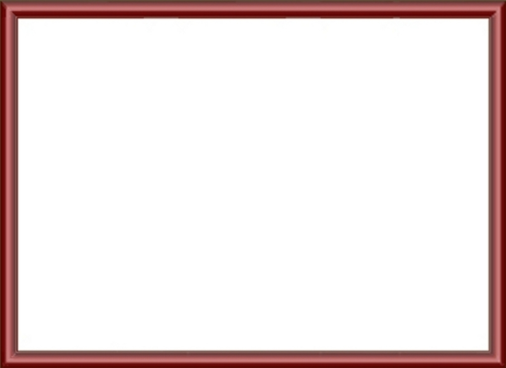

Sonntagsspaziergang im Greutterwald
Bildauswahl z.B. mit Hilfe des integrierten
Dateimanagers. 'Paste': Rechte Maustaste
Falls das Album nicht mit einem Einzelbild
beginnen soll, sollten zuerst weitere
Seiten erstellt werden.
Danach kann auch diese Starteite problemlos
gelöscht werden.
Seite 1/2
